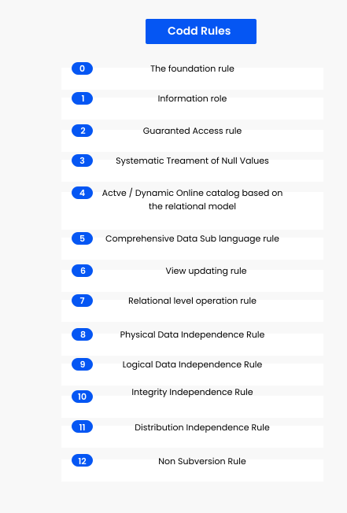

RDBMS 12 Codd's Rule
Every database has tables, and constraints cannot be referred to as a rational database system. And if any database has only relational data model, it cannot be a Relational Database System (RDBMS). So, some rules define a database to be the correct RDBMS.
These rules were developed by Dr. Edgar F. Codd (E.F. Codd) in 1985, who has vast research knowledge on the Relational Model of database Systems. Codd presents his 13 rules for a database to test the concept of DBMS against his relational model, and if a database follows the rule, it is called a true relational database (RDBMS). These 13 rules are popular in RDBMS, known as Codd's 12 rules.
Rule 0: The Foundation Rule
The database must be in relational form. So that the system can handle the database through its relational capabilities.
Rule 1: Information Rule
A database contains various information, and this information must be stored in each cell of a table in the form of rows and columns.
Rule 2: Guaranteed Access Rule
Every single or precise data (atomic value) may be accessed logically from a relational database using the combination of primary key value, table name, and column name.
Rule 3: Systematic Treatment of Null Values
This rule defines the systematic treatment of Null values in database records. The null value has various meanings in the database, like missing the data, no value in a cell, inappropriate information, unknown data and the primary key should not be null.
Rule 4: Active/Dynamic Online Catalog based on the relational model
It represents the entire logical structure of the descriptive database that must be stored online and is known as a database dictionary. It authorizes users to access the database and implement a similar query language to access the database.
Rule 5: Comprehensive Data SubLanguage Rule
The relational database supports various languages, and if we want to access the database, the language must be the explicit, linear or well-defined syntax, character strings and supports the comprehensive: data definition, view definition, data manipulation, integrity constraints, and limit transaction management operations. If the database allows access to the data without any language, it is considered a violation of the database.
Rule 6: View Updating Rule
All views table can be theoretically updated and must be practically updated by the database systems.
Rule 7: Relational Level Operation (High-Level Insert, Update and delete) Rule
A database system should follow high-level relational operations such as insert, update, and delete in each level or a single row. It also supports union, intersection and minus operation in the database system.
Rule 8: Physical Data Independence Rule
All stored data in a database or an application must be physically independent to access the database. Each data should not depend on other data or an application. If data is updated or the physical structure of the database is changed, it will not show any effect on external applications that are accessing the data from the database.
Rule 9: Logical Data Independence Rule
It is similar to physical data independence. It means, if any changes occurred to the logical level (table structures), it should not affect the user's view (application). For example, suppose a table either split into two tables, or two table joins to create a single table, these changes should not be impacted on the user view application.
Rule 10: Integrity Independence Rule
A database must maintain integrity independence when inserting data into table's cells using the SQL query language. All entered values should not be changed or rely on any external factor or application to maintain integrity. It is also helpful in making the database-independent for each front-end application.
Rule 11: Distribution Independence Rule
The distribution independence rule represents a database that must work properly, even if it is stored in different locations and used by different end-users. Suppose a user accesses the database through an application; in that case, they should not be aware that another user uses particular data, and the data they always get is only located on one site. The end users can access the database, and these access data should be independent for every user to perform the SQL queries.
Rule 12: Non Subversion Rule
The non-submersion rule defines RDBMS as a SQL language to store and manipulate the data in the database. If a system has a low-level or separate language other than SQL to access the database system, it should not subvert or bypass integrity to transform data.
Now that you know Codd's Rule, let's start learning MySQL
Share this page on :